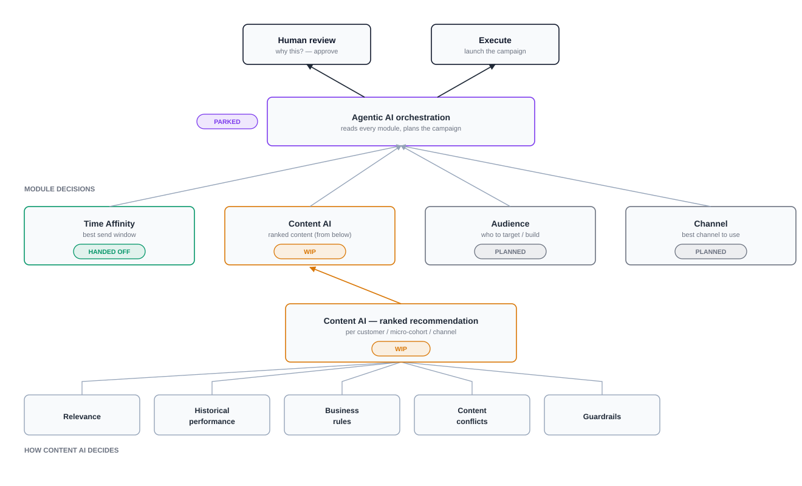
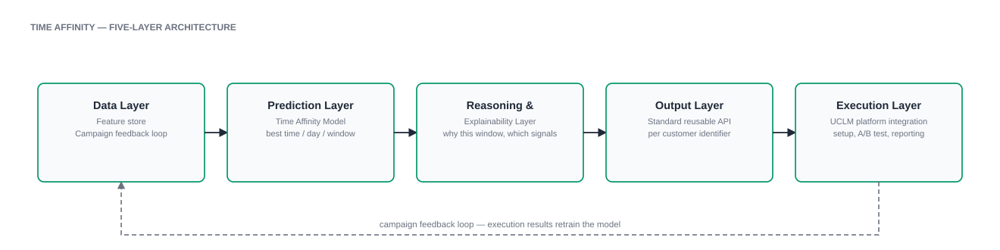
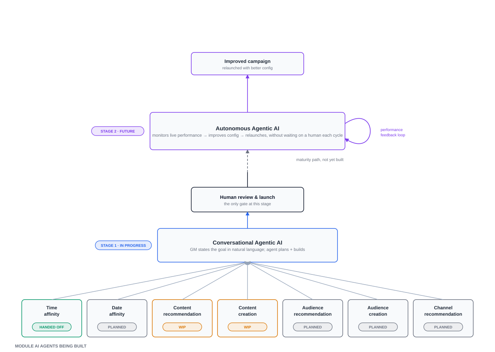
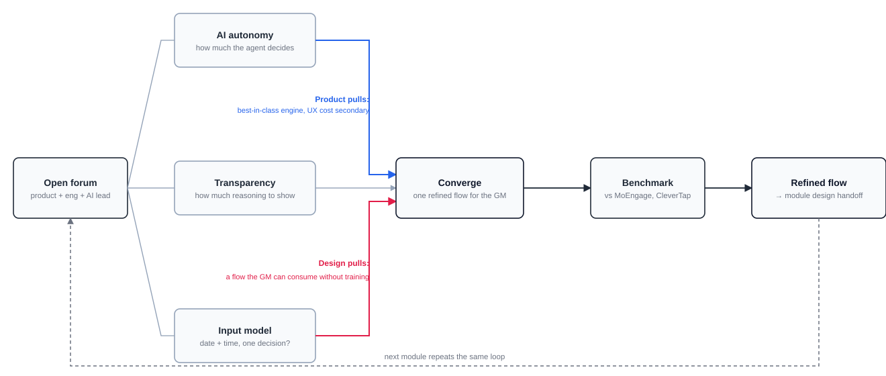
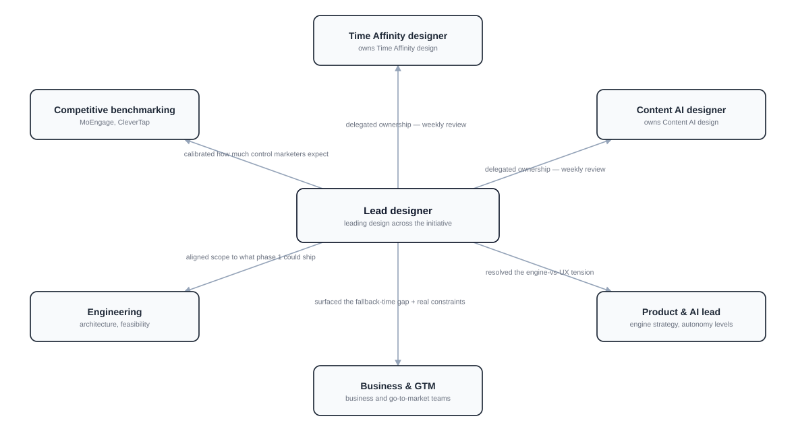

01 — Case study · Oct 2023 – now · three years, one product
Campaigns, now with a brain
TL;DR
To run one campaign across SMS, WhatsApp and email, an Airtel enterprise team needed five tools. Over three years I took the platform from a tool that leaned on Airtel's ops teams for almost every step, to a mostly self-serve one, to one unified platform, and now an AI-native one — where AI plans and a person approves.
5 → 1campaign tools unified into UCLM
15 Crmessages sent through UCLM in its first month (150M)
80%+faster to build a campaign: 30+ min → under 5
₹7 Crinitial UCLM platform revenue (~US$0.74M)
Made IQ Reach self-serve — step by step, from reporting to onboarding and payments, so clients stopped depending on ops; plus its most logic-heavy flows, then IQ Conduit, now live as a SaaS product.
Unified the tools — led design for UCLM, which was sold to an internal client before build, shipped Phase 1, and is rolling out in Africa.
Added intelligence — leading Airtel's first AI initiative in campaigns: Time Affinity live with internal client teams, Content AI in design, an agentic builder validated.
Early outcomes after Phase 1 launched in August 2026. Revenue is for the UCLM SaaS platform only, not channels or Conduit. US$ at ~₹95.
The product
Airtel's enterprise campaign platform: IQ Reach → UCLM (Unified Campaign Lifecycle Manager) → an AI-powered campaign manager heading towards SaaS.
My role
Design lead across all three stages. I set direction, ran research and alignment, and led a team of two designers on the AI modules — using AI tools to prototype and execute faster.
Title · Timeline
Senior Lead Product Designer, Airtel Oct 2023 – now
The problem
Five tools, one marketer, one campaign
Airtel's campaign business had grown tool by tool: a push tool, a pull tool, an audience manager, a planner and a third-party engagement platform for WhatsApp, RCS and email. Each had its own owners, roadmap, data and definition of a "campaign".
The company's own pre-read for unification named the cost: fragmented operations, multiple teams, multiple tools, multi-channel complexity, operational dependency and no single view of how campaigns performed.
The organisation was structured around products. Customers were trying to run a campaign.
The story in four parts
Three years, one product
Each part solved the problem the last one exposed. Part 2, unifying the tools, is the centre of the story and gets the most space.
Clients couldn't see results or do much without Airtel's ops teams. Data decided what to fix first.
IQ Reach · from Oct 2023
From ops-dependent to mostly self-serve
When I started, IQ Reach wasn't self-serve: onboarding, payments, requests and even understanding results ran through Airtel's ops and sales teams. Clients couldn't see how their campaigns performed — their top request. Rather than pitch a rebuild, I proposed we climb one rung at a time: reporting for every channel first, then self-serve (wallet, digital KYC, a request centre), then retention (milestones and price slabs that reward volume), then scale (agentic and live-agent features, simpler campaign steps, an overview dashboard). Over time, most of what clients needed became something they could do on their own.
I took on the most logic-heavy flows myself: campaign creation, reporting, media and template centres, and DND and blacklist settings.
The order came from data. When I joined, a 2023 customer-journey analysis of IQ Reach, built from funnel data and Hotjar session recordings, showed where customers were getting stuck. Only 9 in every 100 customers who signed up ever launched a campaign. That set the order of the first fixes.
IQ Reach customers by the furthest stage they reached, 2023
Signed up, went no further51%
Did KYC and recharged, never launched a campaign40%
Launched a campaign6%
Super users: 3+ campaigns, ₹1,000+ recharged3%
Fig. 1 — The 2023 customer-journey analysis. 91% of customers never launched a campaign.
Where
What the data showed
What it led to
KYC
~52% dropped off before KYC. Verifications sat pending, and 42 customers never came back after a rejection.
A digital KYC journey
Channel set-up
The biggest drop in campaign creation was the first step: connecting a WhatsApp Business account.
Channel onboarding and settings in one place
Templates
Conversion fell from 73% to 48% once someone chose to create a new template.
Template and media centres
Audience
Airtel's ready-made ads audience converted at 55%, against 45% for customers' own uploaded lists.
Audience built into the campaign, later rebuilt in UCLM
Scheduling
Changing the send time threw errors until the second or third try, and a blank campaign name blocked moving on.
Simpler, fewer campaign steps
Pay & submit
Only 13% submitted at the last step. Customers short of credit had no way to recharge there.
A wallet, so credit is topped up inside the product
Part 2
Five tools become one
Phase 1 live · Phase 2 designed · from June 2025
The central story: a long-wanted idea became a platform once a customer paid for it.
UCLM · from June 2025
A customer made the case
One campaign tool had been wanted for years, but engineering never saw enough impact to commit. What changed was a sale: the UCLM concept was sold to an internal client before build. With a paying owner, unification became a commitment.
I led design for UCLM — one experience for campaign creation, audiences, journeys, reporting, assets and every channel — and reshaped the audience journey around the critical issues our interviews had found. Phase 1 shipped 9 capabilities; 8 more are scoped for Phase 2.
Creating a campaign, first step to last, took 30+ minutes in the IQ campaign manager. In UCLM it takes under 5. In its first month UCLM sent 15 crore messages, and since launch teams have run 300+ campaigns across five channels, sending about 5 lakh (500,000) messages each on average.
Each with its own owners, roadmap, data and definition of a "campaign". No single view of results.
→
After · one lifecycle in UCLM
Audience
Campaign
Channel
Execution
Reporting
One place to plan, build, send and measure across channels. Building a campaign: 30+ minutes → under 5.
Fig. 2 — Diagram, not a screenshot: the five tools a marketer needed before, and the single lifecycle UCLM replaced them with.Research
What 12 interviews told us
Two rounds. Seven interviews on the existing audience-creation journey surfaced 3 critical and 5 high-priority issues: a UI refresh would not fix them; they needed structural change. Five more, with the analytics team, the VMax team, business teams and MoEngage users, explored what combining the tools would take. Together with the 2023 funnel analysis, they shaped these priorities:
01
People dropped off while creating campaigns
Too many steps, split across tools, before a campaign could go live.
→ One guided campaign builder
02
Choosing an audience was the least-liked step
Rules were hard to build and harder to check before sending.
→ Audience rebuilt as part of the campaign, not a separate tool
03
Rich formats confused people
WhatsApp carousels and channel set-up needed help from other teams.
→ Channel settings and templates in one place
04
No way to test before launch
Marketers sent campaigns without seeing what customers would get.
→ Preview and test steps before launch
05
No single view of results
Reporting lived in each tool, so nobody could compare channels.
→ Reporting first, then unified reporting
06
Every task leaned on ops
Onboarding, payments and requests ran through Airtel teams.
→ Wallet, digital KYC and a request centre
Benchmarking
What the leaders do
I benchmarked MoEngage and CleverTap on campaign creation, scheduling and AI-assisted content, to calibrate how much control enterprise marketers expect before detail turns into overload.
Channels are steps of one campaign, not separate products.
Self-serve onboarding and payments are table stakes.
Marketers trust AI when they can see the evidence — which led us to show peak engagement hours before asking for a fallback send time.
Analysis
How might we…
…let one marketer run any channel from one place?
…turn a long-wanted idea into something engineering commits to?
…adapt one platform to different markets without forking it?
…let AI handle the complexity while the marketer stays in control?
The key decision
One lifecycle platform, not five better tools
What triggered it
One campaign tool had been wanted for years, but engineering never saw enough impact to commit. Selling the concept to an internal client gave it a paying owner.
Evidence
The company's pre-read on fragmented operations; 7 audience-journey interviews (3 critical, 5 high-priority issues); 5 interviews on combining the tools; the 2023 funnel, where 9 in 100 sign-ups launched a campaign.
Options
Keep improving each toolWhat had happened for years. Every fix stayed inside one tool.
Unify IQ with DLTMy earlier strategy. Strong on engineering, no business owner, so it stalled.
One lifecycle platform, UCLMChosen: a customer was paying for it, and it matched how marketers actually work.
My part
Led design for UCLM end to end. Moderated the first session with leadership and the client around a clickable prototype, and reshaped the audience journey around the interview findings. A designer on my team owned Phase 2 design.
Who had to agree
Senior leadership and the client, then seven groups: product, engineering, analytics, infrastructure, channel teams, RCS and reporting. Tech leads signed off before build.
What changed
Phase 1 went live in August 2026 with 9 capabilities. Building a campaign dropped from 30+ minutes to under 5.
Status
Phase 1 livePhase 2 designed (8 capabilities)
Alignment
Four rounds with senior leadership
A sale settled sponsorship, not agreement. Seven groups — product, engineering, analytics, infrastructure, channel teams, RCS and reporting — had to agree what "one platform" meant. Four rounds with senior leadership finalised UCLM's vision, strategy and direction. How we got there:
Start with a prototypeI moderated the first session around a clickable prototype. Reacting to something real moved talk from "whether" to "how": data pipelines, dashboard metrics, phases and joined-up journeys.
Tell one story with productI came back with deeper findings, and product added the technical side.
Close the details with every functionWorkshops with every team, plus recurring deep dives on two or three modules at a time.
Commit with tech leadsA final review with tech leads, and the work entered development.
Bottlenecks
The hardest UX problems weren't UX problems
They were platform dependencies and alignment. What slowed us down, and how design responded:
Push notifications weren't ready for Phase 1
We kept deep-linking in Phase 1 and moved full push to Phase 2, so launch didn't wait.
Reporting couldn't be validated without real campaign data
We designed against agreed metric definitions and planned validation after first live campaigns.
RCS depended on another team's integration
RCS moved to Phase 2 so the core channels could ship on time.
How we know it worked
Early results after Phase 1
Product outcomes since the first UCLM campaigns went out in August 2026, collected mid-October. Build time is the result closest to design; revenue covers the UCLM SaaS platform only. US$ at ~₹95. UCLM had no event tracking at launch, so build time is observed rather than instrumented.
300+campaigns run across five channels
15 Crmessages sent in the first month (150 million)
80%+less time to build a campaign: 30+ minutes → under 5
5 lakhmessages per campaign on average (500,000)
₹7 Crinitial UCLM platform revenue, from an internal client (~US$0.74M)
Year-end target: ₹25 crore (~US$2.6M) for the UCLM SaaS platform, with the AI Campaign Manager (Phase 3) as the main lever. A goal, not a result yet.
UCLM campaigns per month
August130
September110
October, month to date109
Fig. 3 — Campaigns per month since Phase 1 launched. October counts run to mid-month.
Channel
August
September
October (to date)
In-app ads
110
63
59
SMS
—
43
45 36 one-time · 8 periodic · 1 event-triggered
RCS
20
—
—
Push notifications
—
4
4 2 one-time · 2 event-triggered
WhatsApp
—
—
1
Total
130
110
109
October brought the first periodic and event-triggered campaigns: teams are moving from one-off sends to campaigns that run themselves.
Part 3
One product, many markets
Deal closed · rolling out · from Feb 2026
Africa showed which of our rules were really India's rules.
Africa · from Feb 2026
Configure, don't fork
Taking UCLM to Africa showed which of our rules were really India's rules. No DLT, so template approval and sender IDs went away; USSD came back as a channel; payment risk pushed us toward prepaid. The deal closed on our final designs.
Instead of an Africa version, we made compliance and billing configurable per market. One product, switched on per country — the step that makes SaaS possible.
Part 4
AI, with a person in control
Time Affinity live · Content AI in design · agentic proof of concept
Each AI module answers one question well, and a person approves every outcome.
The principle behind every AI module
Human defines the outcome. AI handles the execution complexity. Human approves the outcome.
Module intelligence
AI that answers one question well
Time Affinity predicts when each customer is most likely to engage. Content AI ranks content on relevance, past performance, business rules, conflicts and guardrails, with a path for clients to bring their own models.

Fig. 4 — How the modules connect: each answers one question, and all of them feed one orchestration layer that a person reviews.

Fig. 5 — Time Affinity in five layers. The reasoning layer is what lets a marketer see why a time was chosen.
Agentic
State the goal, review the plan
The growth manager describes the outcome in plain language. The agent assembles the campaign from every module and hands it back for review and launch. Next: an agent that watches live performance and relaunches better versions — and the open question of where the human still steps in.

Fig. 6 — From module agents to a conversational agent (in progress) and, later, an autonomous one. Human review is the gate at every stage.How much the AI decides
Autonomy, module by module
For each module: what the marketer wants, what the AI does, how far it acts on its own, and what stays with the person.
Module
Marketer's goal
What the AI does
Autonomy
The person decides
Status
Time Affinity
Send when each customer is most likely to engage
Predicts the best send time per customer and shows the peak engagement hours behind it
Suggests, per step
Whether to use AI for that step, and an optional fallback send window
Live
Content AI
Send the content most likely to work
Ranks content on relevance, past performance, business rules, conflicts and guardrails
Recommends
Which content goes out; clients can bring their own models
In design
Agentic builder
Describe the outcome in plain language
Assembles the whole campaign from every module
Drafts the plan
Reviews, edits and launches
Proof of concept · Beta scoped
Autonomous agent
Keep campaigns improving after launch
Watches live performance and relaunches better versions
Acts, within limits
Open question: where the human still steps in
Concept

Fig. 7 — The diverge–converge loop on every AI module. Product pulled toward the strongest engine, design toward a flow growth managers could use; the tension resolved at "converge", not before.
Leadership
Leading the work
Structure before screens. For the AI work, two designers own the modules — one Time Affinity, one Content AI — with weekly reviews. I hold the connecting agentic layer and the stakeholder picture across product, engineering, the AI lead and business teams. AI tools handle much of my own execution, which keeps my time on decisions and alignment.
Steering, not rubber-stamping. When Time Affinity's direction wasn't landing after two reviews — a bare manual-vs-AI toggle with no reasoning shown — I made the case for per-step AI switches and moved the module to the designer best suited to its edge cases.
Listening beyond the brief. Staying close to business teams surfaced the fallback send-time concept, which wasn't in the original ask.
Sharing the playbook. After Phase 1, I ran a session with the wider design team on our process and results; it became a joint brainstorm for another designer's field-staff incentive journey.

Fig. 8 — Leading from the centre: two designers own modules; I hold the connecting layer and every stakeholder relationship.
Trade-offs
What we gave up, on purpose
Every phase was a choice about what not to do yet.
Decision
What we gave up
Why
Reporting before new features
Visible new features in year one
Clients' top ask; visibility earned trust for everything after
Phase 1 = 9 capabilities, Phase 2 = 8
Orchestration, goals, voice, RCS and push at launch
Ship the core lifecycle first; learn from real use
Configurable markets, not a fork
A faster one-off build for Africa
One product to maintain; repeatable for new markets and SaaS
Usable AI over the most powerful engine
Some inputs and model detail upfront
An engine that overwhelms its user fails as a product
Per-step AI switch, not one manual-vs-AI toggle
A simpler-looking form
Marketers need to see and override AI step by step
Optional fallback window for recurring campaigns
Full control over complex recurring schedules
Let Phase 1 ship and learn from real model behaviour
Where it stands
Work
Status
IQ Reach self-serve: reporting, wallet, digital KYC, request centre
Shipped
IQ Conduit
Live as SaaS
UCLM Phase 1 (9 capabilities)
Live since Aug 2026
UCLM Phase 2 (8 capabilities)
Designed
Africa: compliance and billing per market
Deal closed · rolling out
Time Affinity AI
Live with internal client teams
Content AI
In design
Agentic builder
Proof of concept · Beta scoped
UCLM as SaaS for any channel provider
Next
What I learned
Three years, six lessons
Fix the foundation firstOnly 9 in 100 sign-ups ever launched a campaign. Fixing that, and reporting, earned the trust for everything after.
Platforms get built when someone paysThe unsponsored DLT bet taught it; the internal client proved it.
Show, don't pitchA prototype gets people discussing how, not whether.
Alignment is a sequenceVision, product, every function, then tech leads.
Configure, don't forkMarket rules are settings, not product.
With AI, usable beats smartControl and visible reasoning earn trust.
Still open
How much of the ranking logic should a marketer see, and how much stays behind a "why this?"
What human review looks like once the agent assembles multi-module campaigns.
How to prove model quality before expanding past Phase 1.